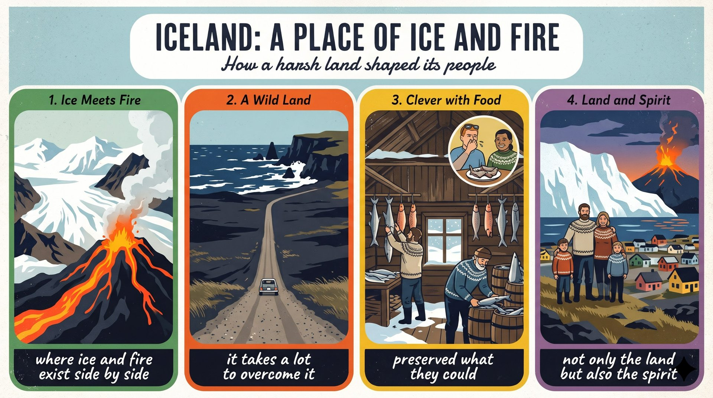

有人認為冰島是危險的土地，也有人認為是機會的土地，兩邊都有理由。
a land of danger or opportunity反對者指出：火山噴出熔岩、冰河覆蓋山脈，作物難以生長，過去的人只能拚命保存食物。
preserve what they could支持者認為：困難造就了堅強聰明的人民，地熱成了能源，景色更吸引全球遊客。
strong and clever克服這裡的大自然確實不容易，但冰與火塑造了土地，也塑造了人的精神，所以它更像一份禮物。
more a gift than a curseSome people (S1) + see (V1) + Iceland (O) + as a land of danger，others (S2) + see (V2) + it (O) + as a land of opportunity。
while 連接兩個對比子句，譯「而」。
see A as B（把 A 視為 B）；some ..., others ... 是固定對比；opportunity 不可數時表機會。
Some people see Iceland as a land of danger,（第一子句）while others see it as a land of opportunity.（while 子句）語塊 1（有些人把冰島視為危險之地）➔ 語塊 2（也有人視它為機會之地）
這句可以順著翻，兩邊句型一樣。
see A as B＝regard A as B＝view A as B。Some people see N as A, while others see it as B.Critics (S) + point out (V) + 兩個 that 子句 (O)。
that 都是名詞子句，由 and 連接，第二個 that 不能省。
point out that（指出）；send out（噴出）；many of + 複數名詞。
Critics point out（主幹）that volcanoes send out lava（第一個 that 子句）and that huge glaciers cover many of the mountains.（第二個 that 子句）語塊 1（批評者指出）➔ 語塊 2（火山會噴出熔岩）➔ 語塊 3（巨大的冰河也覆蓋了許多山脈）
主幹先翻：「批評者指出」。
that：往左看 point out，往右看完整句。and that：and 連接兩個名詞子句。第二個 that 不能省，省了會看不出它也是 point out 的受詞。
point out 近義 note、argue；critic（人）vs. criticism（批評）。Critics point out that ... and that ...They (S) + argue (V) + that 子句 (O)；子句 the harsh landscape (S) + makes (V) + farming (O) + difficult (OC)。
that 名詞子句；because 原因子句；make + O + adj.。
also 放 argue 前；not much 當主詞，配單數動詞 grows；make + O + adj.，✗ They also argue that（主幹）the harsh landscape makes farming difficult（that 子句主幹）because not much grows there.（because 子句）語塊 1（他們還主張）➔ 語塊 2（嚴酷的地形讓農耕變得困難）➔ 語塊 3（因為那裡長不出多少作物）
主幹先翻「他們還主張」。
that：左邊 argue，右邊完整句，是受詞。because：右邊 not much grows there，是解釋農耕為何困難。放後面時前面不加逗號，也不要配 so。
argue that 近義 claim that、maintain that。They also argue that ...people (S) + had to preserve (V) + what they could (O)；to survive long winters 表目的。
what 複合關代當受詞。
had to 是 have to 的過去式；simply to V（僅僅為了）；what 子句後省略 preserve。
In the past,（時間片語）people had to preserve（主幹）what they could（what 子句）simply to survive long winters.（不定詞（目的））語塊 1（過去）➔ 語塊 2 主詞（人們）➔ 語塊 4 提前（只是為了熬過漫長的冬天）➔ 語塊 2 前半（不得不）➔ 語塊 3（能保存的都）➔ 語塊 2 後半（保存下來）
時間先翻「過去」，主詞「人們」。
simply 近義 merely、just。People had to V simply to V.supporters (S) + believe (V) + that 子句 (O)；子句 these difficulties (S) + have made (V) + Icelanders (O) + strong and clever (OC)。
However 是轉折副詞，後加逗號；that 名詞子句。
However 不是連接詞，不能連接兩句；make + O + adj.；supporter（支持者）。
However,（轉折副詞）supporters believe that（主幹）these difficulties have made Icelanders（that 子句主幹）strong and clever.（受詞補語）語塊 1（然而）➔ 語塊 2（支持者認為）➔ 語塊 3（這些困難讓冰島人變得）➔ 語塊 4（堅強又聰明）
However 先翻「然而」，讀者馬上知道要換立場了。
However 近義 Nevertheless、On the other hand。However, supporters believe that ...They (S) + note (V) + that 子句 (O)；子句 fermented shark (S) + is (V) + a result (C)；which many visitors find unpleasant 補充 shark。
that 名詞子句；, which 非限定受格關代，當 find 的受詞；夾在子句主詞和動詞之間。
find + O + OC 的受詞 which 被提前；非限定 which 不可省略；a result of N。
They note that（主幹）fermented shark,（that 子句主詞）which many visitors find unpleasant,（非限定關代）is a result of this creativity.（that 子句動詞）語塊 1（他們指出）➔ 語塊 3 提前（許多遊客覺得難以接受的）➔ 語塊 2（發酵鯊魚）➔ 語塊 4（正是這種創意的成果）
主幹先翻「他們指出」。
that：左邊 note，是名詞子句。which：還原回去就是 many visitors find it unpleasant。find 的受詞被提前變成 which，補語 unpleasant 留在原地。讀到這種句子，先把兩個逗號中間的部分遮起來，主幹就是 fermented shark is a result。
note that 近義 point out that；a result of 近義 a product of。N, which many people find + adj., is a result of ...the steam (S) + hints at (V) + hidden heat (O)；that drifts from the ground 修飾 steam；which people now use as energy 補充 heat。
that 主格關代；, which 非限定受格關代，當 use 的受詞；Besides 副詞。
Besides 後加逗號；hint at（暗示）；use A as B（把 A 當 B 用）。
Besides,（副詞）the steam that drifts from the ground（主詞＋關代）hints at hidden heat,（動詞＋受詞）which people now use as energy.（非限定關代）語塊 1（此外）➔ 語塊 2（從地面飄出的蒸氣）➔ 語塊 3（透露出地底潛藏的熱力）➔ 語塊 4（人們如今把它當成能源）
「此外」先翻，表示要加一個論點。
that：左邊 steam，右邊 drifts 缺主詞，是主格。which：左邊 heat，右邊 use 缺受詞，是受格。雖然都是關代，缺的成分不一樣，有逗號的只能用 which。
Besides 近義 Moreover、In addition。Besides, N hints at ...Tourists (S) + come (V)；to see ... 表目的。
also 表再加一個論點；to V 表目的。
from around the world（來自世界各地）；unusual 字首 un-；cliff 複數加 s。
Tourists also come（主幹）from around the world（介系詞片語）to see its rough cliffs and unusual scenery.（不定詞（目的））語塊 2 提前（世界各地的）➔ 語塊 1（遊客也前來）➔ 語塊 3（欣賞它嶙峋的懸崖和獨特的風景）
主詞的來源要先翻：「世界各地的遊客」。
scenery 不可數，✗ sceneries；unusual 近義 unique。Tourists come from around the world to V.It (虛主詞) + is (V) + true (C) + that 子句 (真主詞)；子句又是虛主詞 it takes a lot to overcome nature。
It is true that ... 是讓步句型；that 子句是真主詞。
It is true that S + V, but ...；下一句才接轉折；overcome 三態。
It is true that（讓步句型）it takes a lot（that 子句主幹）to overcome nature in Iceland.（不定詞（真主詞））語塊 3 提前（要克服冰島的大自然）➔ 語塊 1（確實）➔ 語塊 2（並不容易）
這句先把 to V 的內容翻出來。
It：往右找 that 子句，that 子句才是真主詞。it：往右找 to overcome。議論文用 It is true that 先退一步，顯得公允，接著再提出自己的立場。
It is true that 近義 Admittedly、Granted。It is true that S + V. Nevertheless, ...I (S) + believe (V) + that 子句 (O)；子句 its harsh nature (S) + is (V) + more a gift than a curse (C)。
Nevertheless 轉折副詞；that 名詞子句；more A than B 比較。
more A than B：比較同一事物的兩種性質，不用 -er；Nevertheless 後加逗號。
Nevertheless,（轉折副詞）I believe that（主幹）its harsh nature is（that 子句主幹）more a gift than a curse.（補語）語塊 1（儘管如此）➔ 語塊 2（我認為）➔ 語塊 3（冰島嚴酷的大自然）➔ 語塊 4 調序（與其說是詛咒，不如說是禮物）
「儘管如此」先翻，接著「我認為」。
more a gift than a curse：比較同一個東西的兩種性質。注意順序，A 才是作者真正要說的，中文要放在後面。
more A than B＝A rather than B。I believe that N is more A than B.ice and fire (S) + have shaped (V) + not only A but also B (O)。
not only ... but also 對等；who 主格關代；After all 是轉承語。
After all（畢竟）；對等的 A、B 都是名詞；the spirit of N。
After all,（轉承語）ice and fire have shaped not only the land（主幹）but also the spirit（對等後半）of the people who call it home.（of 片語＋關代）語塊 1（畢竟）➔ 語塊 2（冰與火不僅塑造了這片土地）➔ 語塊 3 前半（也塑造了）➔ 語塊 4 提前（以此為家的人們的）➔ 語塊 3 後半（精神）
「畢竟」先翻，給結論一個理由。
not only ... but also：兩邊都是 shaped 的受詞，都是名詞。who：左邊最近的名詞是 people，右邊 call 缺主詞。who 指人，所以不會修飾 spirit。
After all 近義 Ultimately。After all, N has shaped not only A but also B.1. 請選出最適合填入 (1) 的字：
while。2. 請選出最適合填入 (2) 的字：
harsh winters（嚴酷的冬天）。3. 請選出最適合填入 (3) 的字：
what。4. 請選出最適合填入 (4) 的字：
it takes + N + to V。5. 請選出最適合填入 (5) 的字：
more A than B。6. The company has a strong spirit, and its workers try hard to ________ every problem.
overcome problems（克服問題）。7. Salt was used for centuries to ________ meat before people had refrigerators.
preserve meat。8. The town was destroyed when hot ________ from the volcano reached the streets.
lava。9. Many people find that smell ________, but others do not mind it at all.
find + O + 形容詞。10. 下列哪一句文法正確？
11. 下列哪一句文法正確？
which；which 已是受詞，不再寫 it。12. 「與其說它是詛咒，不如說是禮物。」最佳英譯是：
more A than B，A 才是作者要肯定的 ➔ gift 放前面。13. What do critics say about Iceland?
14. Which is used by supporters as evidence?
15. What is the writer's final position?